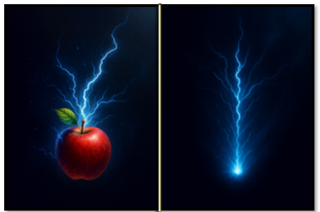
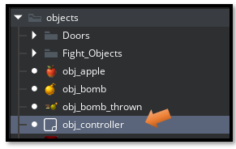
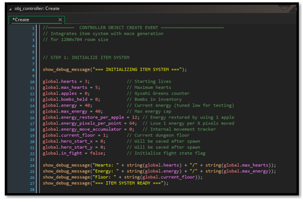
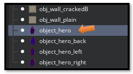
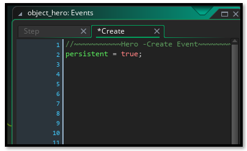
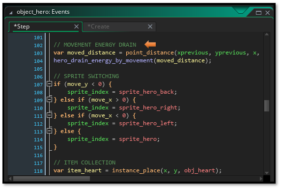
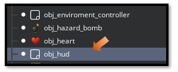
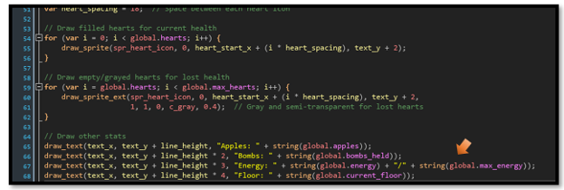
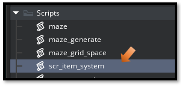
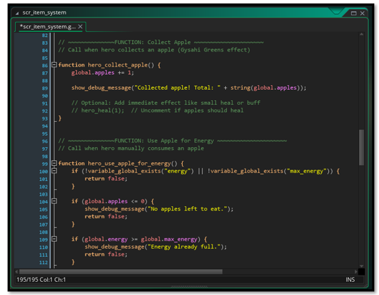

~20 Energy System~
5/25/2026

In this tutorial, we will be working on the energy system. You may have noticed from the game that we have pick-up items that are apples. These apples are going to be like food for the hero. If he is fighting too long and he doesn’t eat some food, he will run out of energy.
This is referred to as the energy system, as it will provide energy for the hero. We will be making changes to 4 files to bring this system in.
- obj_controller
- obj_hero
- obj_hud
- scr_item_system
Adding Code to the obj_controller
Since this file already exists, all we need to do is to go to the obj_controller object in the Asset Browser. You will find this browser on the right-hand side, inside of Game Maker, scroll down to find it, and then just open the code file for it.

Go to this link below, for full CREATE EVENT
This object only has a Create Event, at this point. So, open the Create Code, and paste this 1 obj_controller code into it.

Adding Code to the obj_hero

Now we need to make some changes to the hero. So, inside of the Hero object, we will be dealing with both the Create and the Step Event. The only reason, we are going into the Create event is to clean it up. It is really a mess with a huge amount of code that we do not need. These massive amount of code lines were only being used for testing. We can now just start with one clean line in the Create Event.
This next link for the file will show both the Create event shrunk down to just one line, and the changes that were made to the Step event.
2_obj_hero CREATE and STEP Event
The Create Event

Step Event For Full Code Go Here

Adding Code to the obj_hud
The CREATE Event here, will be staying the same, and we will only be making changes to the DRAW Event.

Go Here to see the Code for the DRAW Event

SCRIPT FILE
scr_item_system
Now remember a script file, is only a file. You do not click on an object or mess with events, when dealing with a SCRIPT file, you only are dealing with a file.

Go Here to get to the code for this SCRIPT file

Testing New Energy System
Now Start the Game to Test the new energy system. You should see your hero running low on energy in the HUD score board, and so he needs to eat up those apples to keep himself going.
And that is all there is to, activating an energy system inside of your own game. I hope you enjoyed this little tutorial that I provided for you this week.
Next week, we will be creating a money system where the hero, when he is kicked out of town can spend some of this money, and either rest up at a motel; or at some point, when we get to weapons, he can go to a merchant, and get some really cool weapons. This future weapon system will enable our hero to fight some even better, and more powerful monsters.